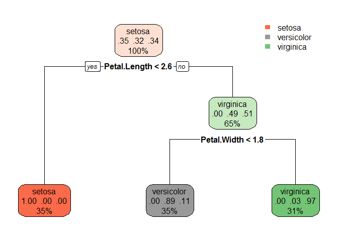
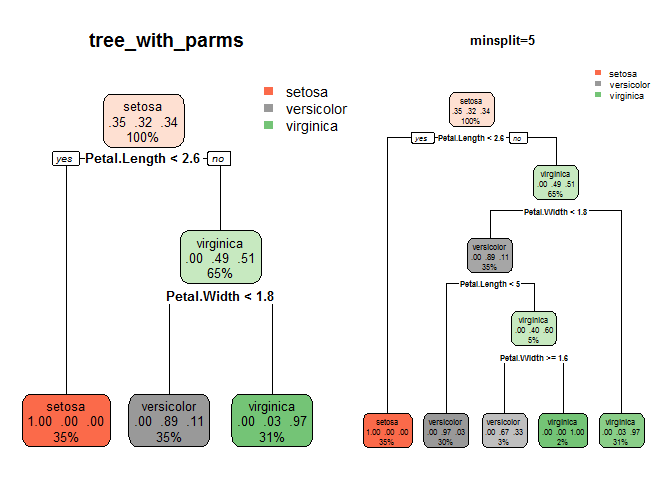
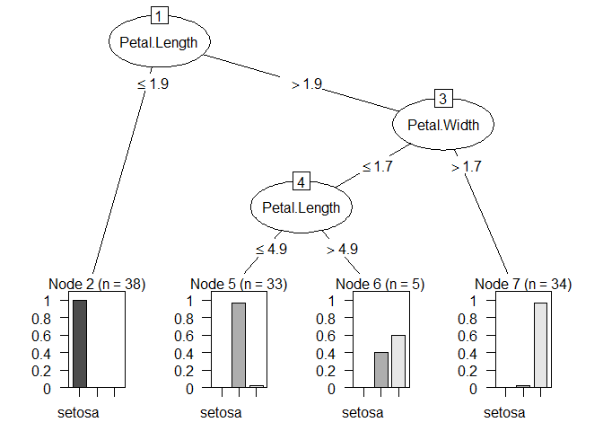

信息是用来消除随机不确定性的东西。 —— 香农
本篇主要包含ID3,C4.5在示例数据集上的手动实现以及C5.0的R实现。
决策树学习采用的是自顶向下的递归方法，其基本思想是以信息熵(或其他目标)为度量，构造一棵熵值下降最快的树，到叶子节点处的熵值为零，此时每个叶节点中的实例都属于同一类。
决策树各类算法简介
ID3
ID3由Ross Quinlan在1986年提出。ID3决策树可以有多个分支，但是不能处理特征值为连续的情况。决策树是一种贪心算法，每次选取的分割数据的特征都是当前的最佳选择，并不关心是否达到最优。在ID3中，每次根据“最大信息熵增益”选取当前最佳的特征来分割数据，并按照该特征的所有取值来切分，也就是说如果一个特征有4种取值，数据将被切分4份，一旦按某特征切分后，该特征在之后的算法执行中，将不再起作用，所以有观点认为这种切分方式过于迅速。ID3算法十分简单，核心是根据“最大信息熵增益”原则(沿信息熵下降最快的方向)选择划分当前数据集的最好特征，信息熵是信息论里面的概念，是信息的度量方式，不确定度越大或者说越混乱，熵就越大。在建立决策树的过程中，根据特征属性划分数据，使得原本“混乱”的数据的熵(混乱度)减少，按照不同特征划分数据熵减少的程度会不一样。在ID3中选择熵减少程度最大的特征来划分数据（贪心），也就是“最大信息熵增益”原则。
C4.5
C4.5是Ross Quinlan在1993年在ID3的基础上改进而提出的。.ID3采用的信息增益度量存在一个缺点，它一般会优先选择有较多属性值的Feature,因为属性值多的Feature会有相对较大的信息增益(信息增益反映的给定一个条件以后不确定性减少的程度,必然是分得越细的数据集确定性更高,也就是条件熵越小,信息增益越大)。为了避免这个不足C4.5中是用信息增益比率(gain ratio)来作为选择分支的准则。信息增益比率通过引入一个被称作分裂信息(Split information)的项来惩罚取值较多的Feature。除此之外，C4.5还弥补了ID3中不能处理特征属性值连续的问题。但是，对连续属性值需要扫描排序，会使C4.5性能下降。
CART
CART（Classification and Regression tree）分类回归树由L.Breiman,J.Friedman,R.Olshen和C.Stone于1984年提出。ID3中根据属性值分割数据，之后该特征不会再起作用，这种快速切割的方式会影响算法的准确率。CART是一棵二叉树，采用二元切分法，每次把数据切成两份，分别进入左子树、右子树。而且每个非叶子节点都有两个孩子，所以CART的叶子节点比非叶子多1。相比ID3和C4.5，CART应用要多一些，既可以用于分类也可以用于回归。CART分类时，使用基尼指数（Gini）来选择最好的数据分割的特征，gini描述的是纯度，与信息熵的含义相似。CART中每一次迭代都会降低GINI系数。下图显示信息熵增益的一半，Gini指数，分类误差率三种评价指标非常接近。回归时使用均方差作为loss function。
决策树生成计算过程
数据集
| ID | 年龄 | 有工作 | 有自己的房子 | 信贷情况 | 类别 |
|---|---|---|---|---|---|
| 1 | 青年 | 否 | 否 | 一般 | 否 |
| 2 | 青年 | 否 | 否 | 好 | 否 |
| 3 | 青年 | 是 | 否 | 好 | 是 |
| 4 | 青年 | 是 | 是 | 一般 | 是 |
| 5 | 青年 | 否 | 否 | 一般 | 否 |
| 6 | 中年 | 否 | 否 | 一般 | 否 |
| 7 | 中年 | 否 | 否 | 好 | 否 |
| 8 | 中年 | 是 | 是 | 好 | 是 |
| 9 | 中年 | 否 | 是 | 非常好 | 是 |
| 10 | 中年 | 否 | 是 | 非常好 | 是 |
| 11 | 老年 | 否 | 是 | 非常好 | 是 |
| 12 | 老年 | 否 | 是 | 好 | 是 |
| 13 | 老年 | 是 | 否 | 好 | 是 |
| 14 | 老年 | 是 | 否 | 非常好 | 是 |
| 15 | 老年 | 否 | 否 | 一般 | 否 |
ID3
InfoGain g(D|A)
ID3算法的核心是在决策树各个结点上应用信息增益准则选择特征，递归地构建决策树。具体方法是：从根结点开始，对结点计算所有特征的信息增益，选择信息增益最大的特征作为结点特征，由该特征的不同取值建立子结点；再对子结点递归地调用以上方法，构建决策树；直到所有特征的信息增益均很小或没有特征可以选择为止。最后得到一个决策树。
ID3算法只有树的生成，所以该算法生成的树容易产生过拟合。后续包含决策树的剪枝。决策树的剪枝往往通过最小化决策树整体的损失函数实现。
分别以$A_1, A_2, A_3, A_4$表示年龄、有工作、有自己的房子和信贷情况4个特征，则
(1)
(2)
(3)
(4)
(5)
由于$H(D,A_3)=0.551$最小，因此，首先选择$A_3$作为最优特征，生成树的第一个分枝。
try Variance like ANOVA
(1)
$V(D,A)$为基于特征A划分后的组内方差之和；$g_{v}(D,A)$为组间方差。选择组间方差最大的特征
(2)
(3)
(4)
(5)
$g_{V}(D,A_3)=2$最小，所以选择$A_3$为最优特征进行分割。
C4.5: Info Gain Ratio
计算信息增益比
CART: Gini
CART假设决策树是二叉树，内部结点特征的取值为“是”和“否”，左分枝是取值为“是”的分枝，右分枝是取值为“否”的分枝。这样的决策树相当于递归地二分每个特征，将输入空间即特征空间划分为有限个单元，并且在这些单元上确定预测的概率分布，也就是在输入给定的条件下输出的条件概率分布。分类树用基尼指数选择最优特征，同时决定该特征的最优二值切分点。
已1，2，3表示年龄为青年，中年，老年；以1，2表示是有工作和有自己的房子的值为是和否；以1，2，3表示信贷情况的值为非常好、好和一般。
(1)
(2)
(3)
(4)
(5)
(6)
由于$Gini(D, A_3 = 1) = 0.27$最小，所以选择特征$A_3$为最优特征，$A_3 = 1$为其最优分割点。于是，根结点生成两个子结点，一个是叶结点。对另一个结点继续使用以上方法在$A_1,A_2,A_3,A_4$中选择最优的特征及其最优切分点。
R实现： rpart
R中决策树的包: rpart, party, RWeka, ipred, randomForest, gbm, C50.
rpart:CART/ID3. The default criterion, which is maximized in each split is the Gini.
rpart常用参数
| 参数 | 说明 |
|---|---|
| formula | y ∼ x1 + x2 + ⋯ + xn |
| data | 数据集 |
| na.action | 去掉 y 缺失，保留自变量缺失 |
| method | class:分类变量，anova:回归树 |
| parms | 只适用分类树 parms = list(split,prior,loss) split = c("info","gini") |
| controls | 控制决策树形状大小 minsplit,maxdepth,cp |
rpart参数详解
rpart.plot常用参数
| 参数 | 说明 |
|---|---|
| tree | tree模型 |
| type | 节点形状1,2,3,4 |
| branch | 若=1，则为垂直决策树 |
| cex | 符号大小 |
controls参数详解
1 | library(rpart) |
## Warning: package 'rpart.plot' was built under R version 3.5.3
1 | library(gmodels) |
## Loading required package: lattice
## Loading required package: ggplot2
1 | library(magrittr) |

1 | # cross-check its validity by pitching it against our test data |
## Confusion Matrix and Statistics
##
## Reference
## Prediction setosa versicolor virginica
## setosa 15 0 0
## versicolor 0 13 1
## virginica 0 1 10
##
## Overall Statistics
##
## Accuracy : 0.95
## 95% CI : (0.8308, 0.9939)
## No Information Rate : 0.375
## P-Value [Acc > NIR] : 2.044e-14
##
## Kappa : 0.9244
## Mcnemar's Test P-Value : NA
##
## Statistics by Class:
##
## Class: setosa Class: versicolor Class: virginica
## Sensitivity 1.000 0.9286 0.9091
## Specificity 1.000 0.9615 0.9655
## Pos Pred Value 1.000 0.9286 0.9091
## Neg Pred Value 1.000 0.9615 0.9655
## Prevalence 0.375 0.3500 0.2750
## Detection Rate 0.375 0.3250 0.2500
## Detection Prevalence 0.375 0.3500 0.2750
## Balanced Accuracy 1.000 0.9451 0.9373
1 | # pruning |

C50
1 | library(C50) |
##
## Call:
## C5.0.formula(formula = Species ~ ., data = iris_train)
##
##
## C5.0 [Release 2.07 GPL Edition] Fri Mar 29 10:47:45 2019
## -------------------------------
##
## Class specified by attribute `outcome'
##
## Read 110 cases (5 attributes) from undefined.data
##
## Decision tree:
##
## Petal.Width <= 0.4: setosa (35)
## Petal.Width > 0.4:
## :...Petal.Width > 1.7: virginica (35)
## Petal.Width <= 1.7:
## :...Petal.Length <= 5: versicolor (36/1)
## Petal.Length > 5: virginica (4/1)
##
##
## Evaluation on training data (110 cases):
##
## Decision Tree
## ----------------
## Size Errors
##
## 4 2( 1.8%) <<
##
##
## (a) (b) (c) <-classified as
## ---- ---- ----
## 35 (a): class setosa
## 35 1 (b): class versicolor
## 1 38 (c): class virginica
##
##
## Attribute usage:
##
## 100.00% Petal.Width
## 36.36% Petal.Length
##
##
## Time: 0.0 secs
1 | plot(treec50) |

1 | # make predictions |
##
## setosa versicolor virginica
## setosa 13 0 0
## versicolor 2 13 1
## virginica 0 1 10
ID3, C4.5,C5.0,CART优缺点
优点
缺点
1 不能处理连续特征
2 倾向于选择属性值较多的特征进行分枝，可能导致庞大的树。
解决方法
特征属性合并，减少特征属性值
3 对噪声敏感
4 可能过拟合
解决方法
将敏感的缺点转化为优点，使用Random Forest
ID3换C5.0
5 不能处理缺失值
优点
1 能处理连续特征
2 能处理缺失值
缺点
1 产生的树可能不够稳定
解决方法
将不稳定的缺点转化为优点，使用Random Forest
C5.0是对C4.5的改进。
优点
1 主要增加了对boosting的支持
2 比C4.5构造的树更简单
3 内存更小
缺点